Как вести сайт «Мастино»
Простая инструкция по админке — странице, где вы сами добавляете двери, меняете цены и смотрите заявки. Ничего сложного: всё как в обычной анкете на телефоне.
Сломать ничего нельзя. Если что-то заполнено неправильно, сайт сам подскажет, что исправить. Любую дверь можно временно скрыть с сайта, не удаляя её.
1Как войти
Админка откроется, когда сайт переедет на свой адрес. Тогда я пришлю ссылку, логин и пароль. Ссылку удобно сохранить в закладки на телефоне.
Можно работать и с телефона, и с компьютера — выглядит одинаково.
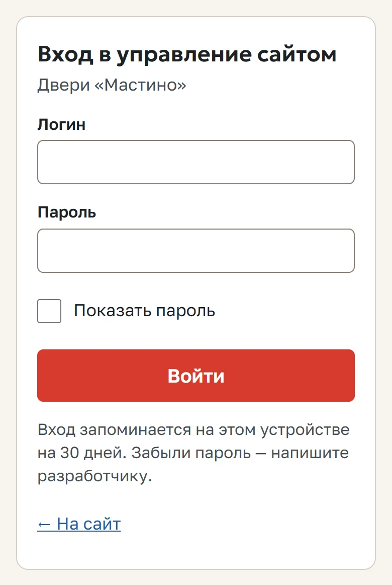
Пароль никому не сообщайте. Сменить его можно в разделе «Настройки».
3Заявки от покупателей
Когда покупатель оформляет заказ на сайте, заявка появляется во вкладке «Новые».
- Откройте заявку и позвоните покупателю — кнопка «Позвонить» или «Написать в WhatsApp».
- Договорились — нажмите Взять в работу. Заявка перейдёт во вкладку «В работе».
- Дверь установлена — отметьте статус «Выполнена». Передумал — «Отменена».
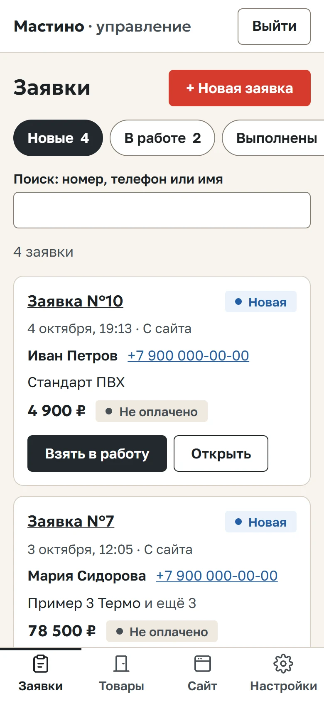
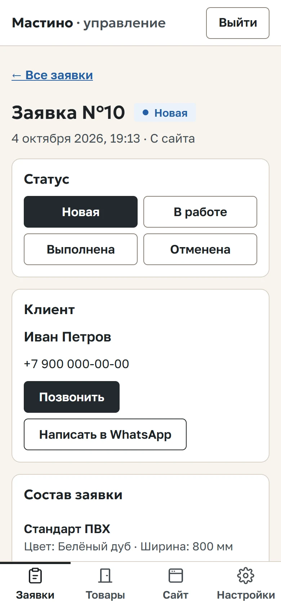
Если покупатель позвонил сам, заявку можно записать вручную — кнопка + Новая заявка.
4Как добавить дверь
Откройте Товары и нажмите + Добавить товар.
Шаг 1. Выберите, что добавляете
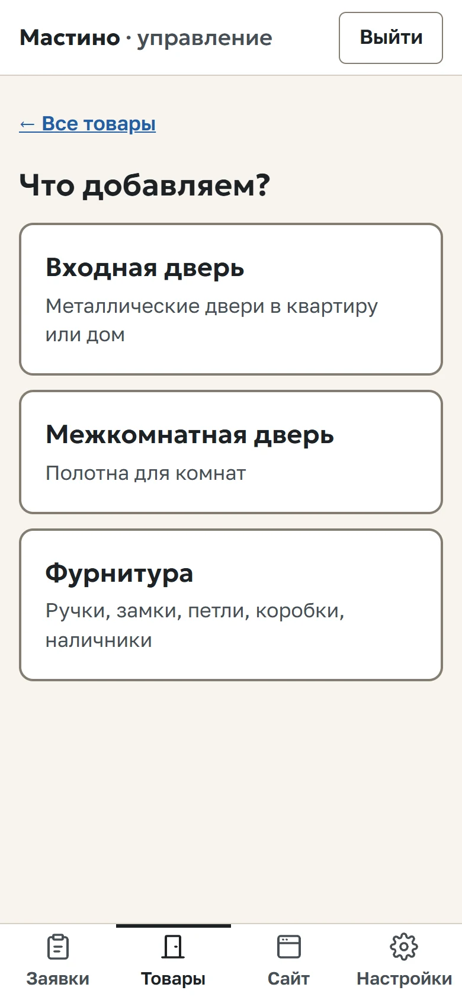
Шаг 2. Название, цена, наличие
«Старая цена» — только для акции: на сайте она будет зачёркнута рядом с новой.
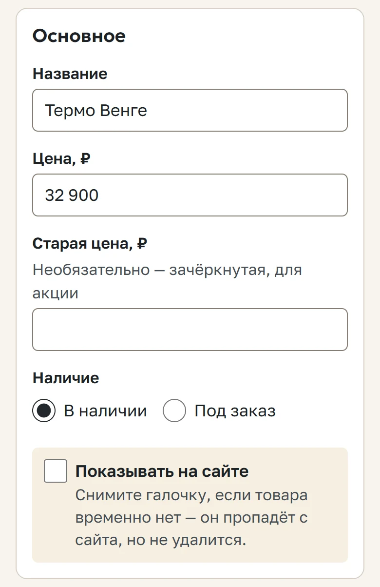
Шаг 3. Про дверь
Линейка — серия двери («Термо», «Стандарт»). По ней покупателю на сайте подбираются ручки и замки. Дальше — для квартиры или дома и какие бывают размеры.
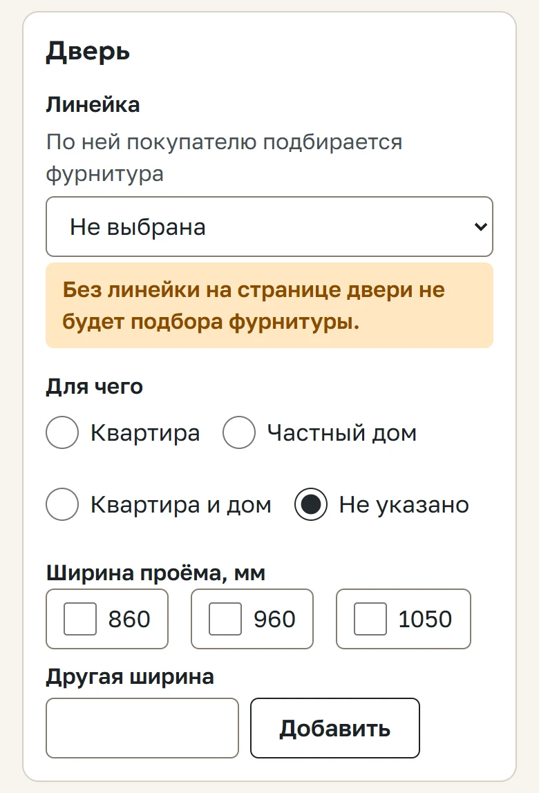
Шаг 4. Цвета
Отметьте галочками, в каких цветах бывает эта дверь.
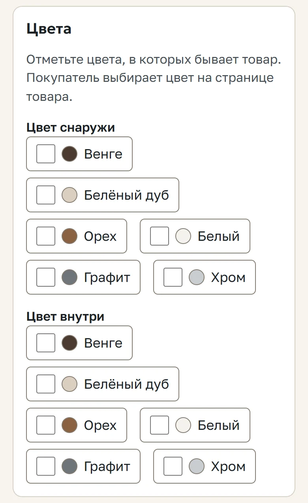
Шаг 5. Описание и характеристики
Описание — пару предложений своими словами. Характеристики — по одной строке: слева что («Толщина полотна»), справа сколько («90 мм»).
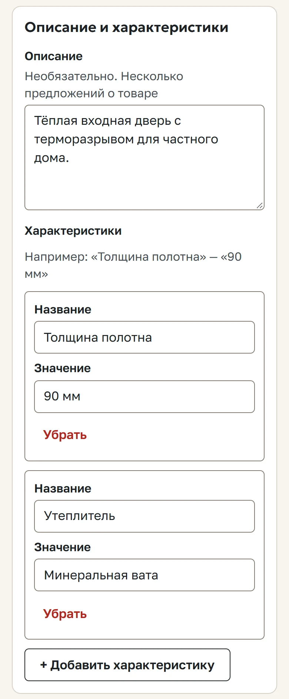
Шаг 6. Сохраните, затем добавьте фото
Нажмите «Создать товар» внизу. После этого появится блок «Фото» — нажмите + Добавить фото и выберите снимки из галереи. Можно несколько сразу. Первое фото — главное, его видно в каталоге. Порядок меняется кнопками «Выше» и «Ниже».
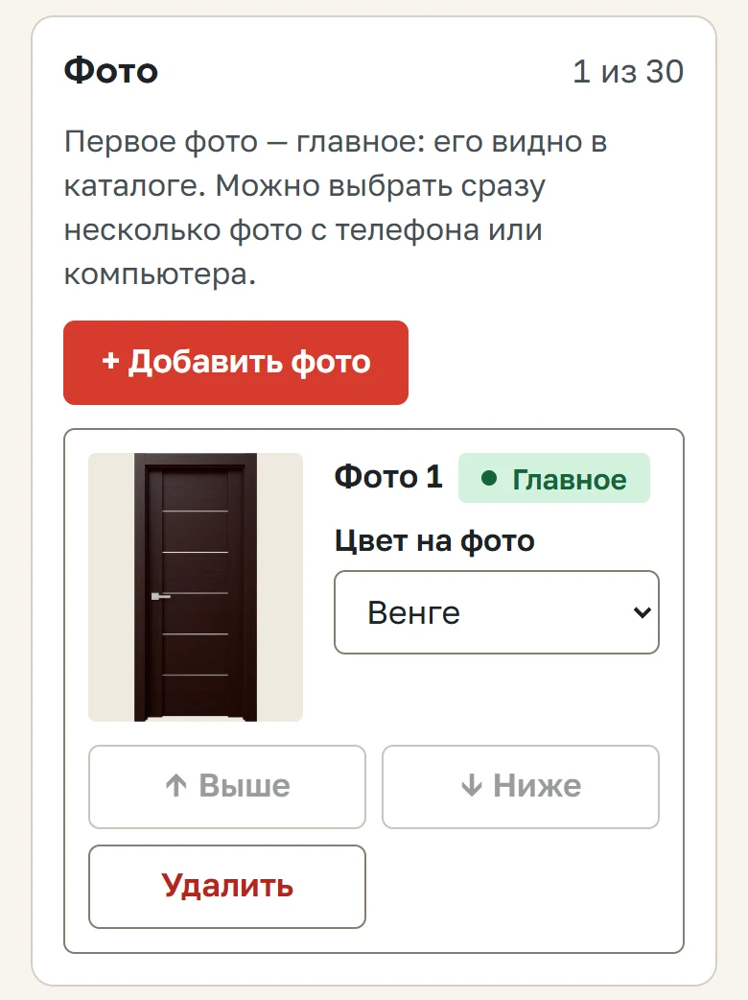
Шаг 7. Покажите на сайте
Поставьте галочку «Показывать на сайте» и нажмите «Сохранить изменения». Готово — дверь в каталоге.
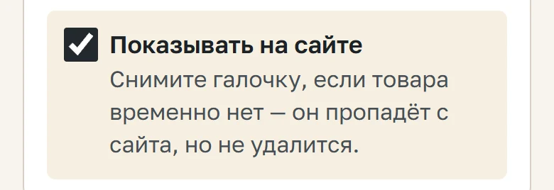
Двери временно нет? Снимите эту галочку — дверь пропадёт с сайта, но всё заполненное сохранится. Вернёте галочку — дверь снова в каталоге.
Поменять цену или фото — в «Товарах» нажмите на дверь, исправьте и нажмите «Сохранить изменения».
5Фурнитура к дверям
Ручки, замки, петли добавляются так же, как двери (тип «Фурнитура»). Чтобы покупатель видел на странице двери подходящие ручки и замки, откройте Товары → кнопка Совместимость фурнитуры, выберите линейку и отметьте галочками, что к ней подходит. Это делается один раз для всей линейки, а не для каждой двери.
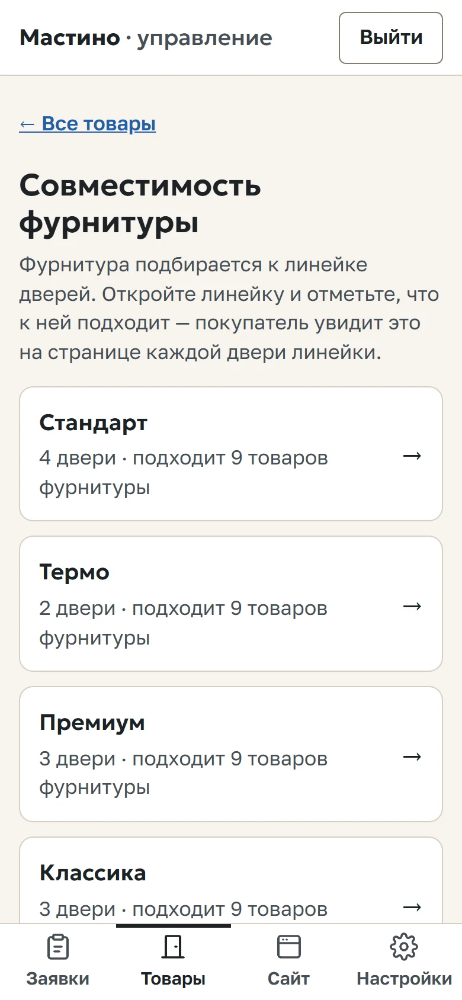
6Адрес, отзывы, наши работы, розыгрыши
Всё, что на сайте не относится к товарам, — в разделе Сайт:
- Розыгрыши — баннер с призом и даты розыгрыша.
- Адрес магазина — адрес, часы работы, фото входа.
- Наши работы — фото установленных дверей у покупателей.
- Отзывы — перенесите хорошие отзывы из ВКонтакте или Яндекса.
- Подрядчики — ваши установщики и доставка (на сайте не видны).
- Каталог — линейки, цвета и разделы. Нужны, когда появляется новая серия или новый цвет.
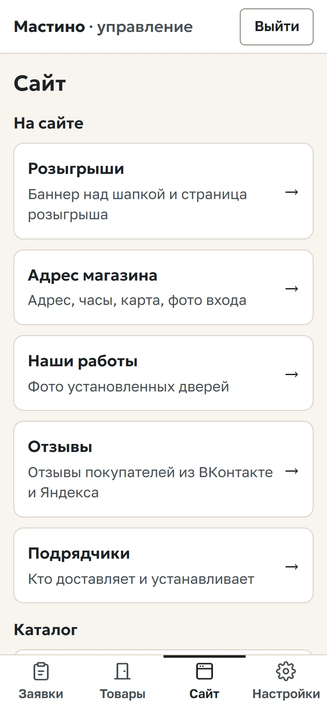
7Что подготовить заранее
Чтобы заполнить каталог за один вечер, удобно заранее собрать:
- Список дверей: название, цена, в наличии или под заказ.
- Характеристики каждой двери: толщина, утеплитель, замки, размеры, цвета.
- Фото каждой двери — лучше в каждом цвете.
- Фото входа в магазин и 5–10 фото установленных дверей для «Наших работ».
- Несколько отзывов покупателей.
Как снимать двери: вертикально, дверь целиком, светлый ровный фон, днём без вспышки. Подойдут и фото от поставщика.
Дверей много и есть таблица Excel (например, от поставщика)? Пришлите её мне — загружу всё сразу, а вам останется только проверить и добавить фото.